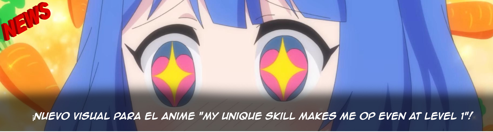

La Unidad de Sonido Táctico Walküre, presentada en la serie de anime Macross Delta, realizará su última gira en vivo en solitario “SANKYO presenta Walküre FINAL LIVE TOUR 2023 ~Last Mission~”...
Walküre son Mikumo Δ JUNNA, Freyja Δ Minori Suzuki, Kaname Δ Kiyono Yasuno, Reina Δ Nao Toyama, Makina Δ Nozomi Nishida
Tatsuya Nishiwaki (Band Master, Teclados), Yasuo Sano (Batería), BOH (Bajo), Akitoshi Kuroda (Guitarra), Kazuma Sotozono (Guitarra), Kyoichi Shinozaki (Manipulador)
Los boletos estarán disponibles en las siguientes regiones: EE. UU., Reino Unido, Japón, Hong Kong, Taiwán, Corea del Sur, Singapur, Tailandia y más.
El sitio web oficial del anime de My Unique Skill Makes Me OP Even at Level 1 (Level 1 Dakedo Unique Skill de Saikyou Desu) desveló el pasado jueves un nuevo tráiler promocional de la serie. También se desvelaron nuevos miembros del casting de voces adicional e información sobre el tema de cierre, que llevará por título «Tamborine no Naru Oka» y será interpretado por la cantante Airi Miyakawa. El estreno de este anime está previsto para el mes de julio y estará disponible en simulcast a nivel mundial a través de Crunchyroll.
La tercera temporada de Kimetsu no Yaiba se acerca a paso veloz y estamos cada vez más cerca de poder presenciar este nuevo capítulo en la vida de Tanjiro y el resto de los cazadores de demonios. En este nuevo arco, Tanjiro hará un viaje a la Aldea del Herrero en compañía de su hermana Nezuko y tres nuevos personajes para el anime: Muichiro Tokito, el Pilar de la Niebla; Mitsuri Kanroji, Pilar del Amor; y Genya Shinazugawa, el hermano del Pilar del Viento.
La temporada 3 tiene a todos emocionados y los fans ya no pueden esperar. La función especial en cines está programada para el 4 de marzo, mientras que estará disponible para el público en general a partir del 9 de marzo.
Mikasa Ackerman protagoniza un visual especial para celebrar que solo falta un día para el regreso de "Shingeki no Kyojin: The Final Season (Attack on Titan)". #shingeki
El creador de Sword Art Online, Reki Kawahara, dice que los personajes femeninos no deben ser considerados trofeos. En una entrevista con la mangaka Nio Nakatani, creadora de Yagate kimi ni naru, Kawahara comentó que los personajes femeninos se volverán más activos en este punto de su historia y dejarán de ser meros trofeos para el protagonista.
En Sword Art Online: Alicization veremos más personajes femeninos fuertes y con protagonismo, rompiendo con los estereotipos tradicionales.
{kind=link}